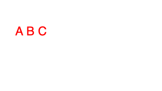
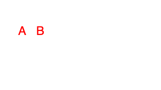
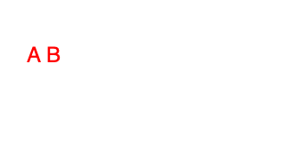
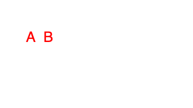

default-newline-tab-collapse-equivalent

<svg xmlns="http://www.w3.org/2000/svg" width="320" height="180"><g fill="red" font-family="DejaVu Sans Mono" font-size="24"><text x="30" y="70">A B C</text></g></svg>
每组展示原输入与等价文本的当次PNG，同一本地字体。

<svg xmlns="http://www.w3.org/2000/svg" width="320" height="180"><g fill="red" font-family="DejaVu Sans Mono" font-size="24"><text x="30" y="70"> A B C </text></g></svg>
<svg xmlns="http://www.w3.org/2000/svg" width="320" height="180"><g fill="red" font-family="DejaVu Sans Mono" font-size="24"><text x="30" y="70">A B C</text></g></svg>

<svg xmlns="http://www.w3.org/2000/svg" width="320" height="180"><g fill="red" font-family="DejaVu Sans Mono" font-size="24"><text x="30" y="70" xml:space="preserve"> A B </text></g></svg>

<svg xmlns="http://www.w3.org/2000/svg" width="320" height="180"><g fill="red" font-family="DejaVu Sans Mono" font-size="24"><text x="30" y="70" xml:space="preserve"> A B </text></g></svg>

<svg xmlns="http://www.w3.org/2000/svg" width="320" height="180"><g fill="red" font-family="DejaVu Sans Mono" font-size="24"><text x="30" y="70"> A <tspan>B</tspan> C </text></g></svg>

<svg xmlns="http://www.w3.org/2000/svg" width="320" height="180"><g fill="red" font-family="DejaVu Sans Mono" font-size="24"><text x="30" y="70">A B C</text></g></svg>
<svg xmlns="http://www.w3.org/2000/svg" width="320" height="180"><g fill="red" font-family="DejaVu Sans Mono" font-size="24"><text x="30" y="70">A <tspan/> B</text></g></svg>

<svg xmlns="http://www.w3.org/2000/svg" width="320" height="180"><g fill="red" font-family="DejaVu Sans Mono" font-size="24"><text x="30" y="70">A B</text></g></svg>

<svg xmlns="http://www.w3.org/2000/svg" width="320" height="180"><g fill="red" font-family="DejaVu Sans Mono" font-size="24"><text x="30" y="70" xml:space="preserve"> A B </text></g></svg>

<svg xmlns="http://www.w3.org/2000/svg" width="320" height="180"><g fill="red" font-family="DejaVu Sans Mono" font-size="24"><text x="30" y="70" xml:space="preserve"> A B </text></g></svg>
{
"source": "/Users/lichao/Desktop/xpert/user-feedback/runs/replay-recovery-20261118/recover-20261118-12587-text-whitespace/local-frozen-source/cairosvg/__init__.py",
"tests": 5,
"passed": 5,
"failed": 0,
"checks": [
{
"name": "default-newline-tab-collapse",
"passed": true
},
{
"name": "preserve-newline-tab-to-spaces",
"passed": true
},
{
"name": "span-boundary-spaces",
"passed": true
},
{
"name": "empty-span-consolidates-space",
"passed": true
},
{
"name": "same-text-repeat",
"passed": true
}
],
"oracle_reference": "SVG 1.1 text 10.15 whitespace; same local monospaced font, rendered equivalences"
}